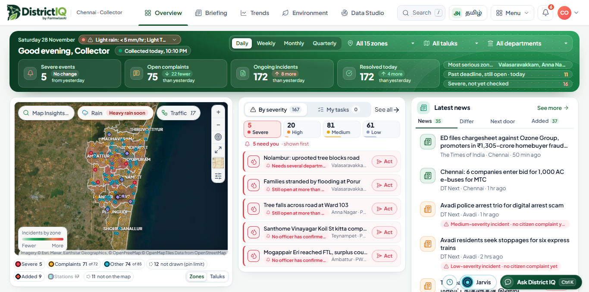
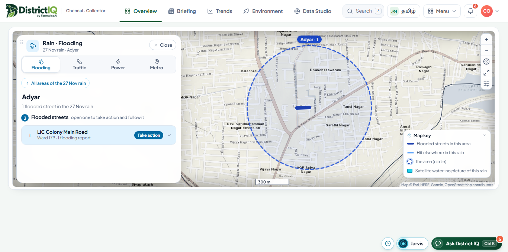
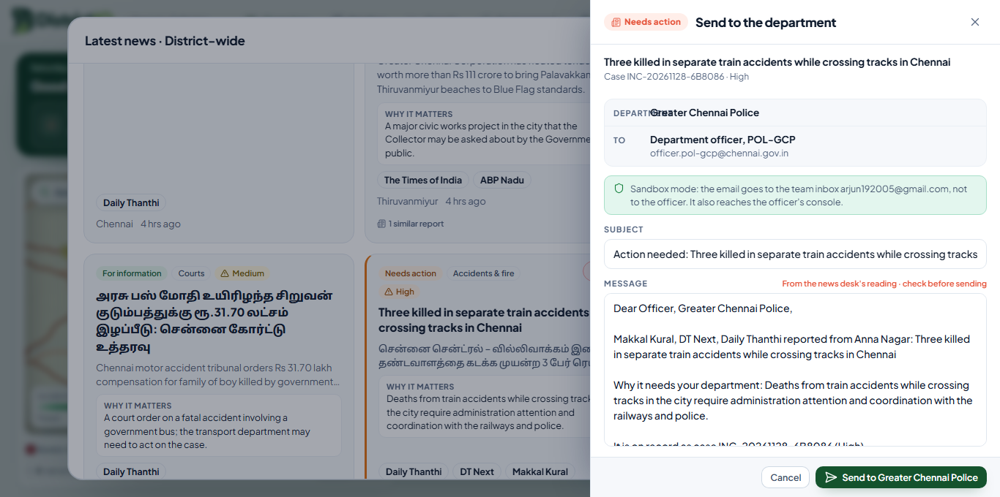

DIQ
Team Initiators · FarmwiseAI Campus Product Challenge
District IQOne console for running a district, with proof behind every number
District IQ brings a district's citizen complaints, police and department records, newspapers, weather, rain gauges, air quality, lakes and market prices into one place. It joins reports of the same event into one incident, ranks what needs the Collector first, and sends the work to the right department, then follows it until it is done.
13data feeds, read on a schedule
200wards in 15 zones, placed in 17 revenue taluks
26department and petition-counter consoles, plus the Collector's
2languages everywhere: English and Tamil
The problem we solve
Today
- The same flooded street arrives as a 112 call, three citizen complaints, a PWD field note and a news report, in four different systems.
- The Collector learns about a problem from the newspaper, after the people affected already know.
- An instruction sent to a department has no simple follow-up: was it done, and did it hold in the next rain?
With District IQ
- One incident, with every report behind it, each one openable.
- News that needs the Collector is flagged by an AI desk and sent to the officer in one click.
- Every action is tracked: assigned, reported with photos, verified, and tested by the next comparable rain.
Who uses it
District CollectorDepartment officersCitizensPetition counter (Manu Desk)
The Collector sees the whole district; each officer sees only their department; citizens file and track complaints; the petition counter turns paper petitions into complaints with OCR (PaddleOCR, then AI).
What the judges will see
Built for decisions, not for looking at

The Collector's Overview, as it opens: severe events, open complaints, the satellite map of incidents by zone, cases ranked by severity, and the news that matters.

Rain: pick a past heavy rain, then an area. The map draws a circle round it and lists each flooded street with Take action and its follow-up. Every figure shows its source.

News that needs action: one click drafts the instruction to the right department officer; the Collector reads it and approves it.
What makes it different
- Proof everywhere. Rainfall shows the gauges that measured it; a flooded street shows the complaint behind it; a headline opens the full article from a named official outlet.
- Jarvis, by voice, in English or Tamil. "Open incident …", "nearest police stations to Avadi", "draft a mail to the Metrowater officer about …". It answers only from the district's records and says when the data does not hold something.
- Closed loop. Every instruction reaches the officer's console, comes back with a report and photos, and is verified by the Collector.
Cost efficiency
What it costs to run, measured
These figures come from our own records and the hosting bill, read on 29 November 2026. Nothing on this page is a list price we did not pay.
| What | Measured | Where the figure comes from |
|---|
| Hosting the whole website, always on, for one full day (28 Nov) | US$ 2.38 | Modal billing report: $1.71 CPU, $0.67 memory |
| One AI answer with Claude Sonnet (Jarvis and Ask District IQ) | about US$ 0.016 | Site spend record: $4.02 over 254 calls |
| One AI answer with Claude Haiku (fast steps) | about US$ 0.0008 | Site spend record: $8.63 over 11,406 calls |
| Text in one answer | about 6,300 tokens | Site call ledger, answer engine (9,500 for Jarvis's planner) |
| Speech, speech-to-text, other models | US$ 0 | Sarvam, Groq and Gemini, used within their free tiers |
A day of use: an estimate from the measured costs
| If the district asks… | AI answers (Sonnet) | Hosting | Total a day | Total for 30 days |
|---|
| 100 questions a day | $1.60 | $2.38 | $3.98 | about $119 |
| 300 questions a day | $4.80 | $2.38 | $7.18 | about $215 |
| 1,000 questions a day | $16.00 | $2.38 | $18.38 | about $551 |
How the estimate is made. Questions a day × $0.016 per Sonnet answer, plus one day's measured hosting. A question that needs several steps costs more; with Haiku for answers the AI part is about one-twentieth. Our spend records include our own testing (4,369 of the recorded Claude calls were automated evaluation runs), so they overstate real use. The AWS storage bill (S3, DynamoDB, API Gateway, Lambda) was not read for this sheet.
Why it stays cheap
- Most screens are computed by code from the district's data, with no AI call; the AI is used where it adds understanding (reading news, answering questions, drafting).
- A topic guard declines off-topic questions with no model call; repeated answers and speech are cached.
- One small server runs everything; it can sleep when nobody uses it (normal mode), or stay warm for a demo.
Devices
Runs on the computers a Collectorate already has
Measured on our own laptop (17 Nov): an Intel Core i7-6600U with 2 cores and 16 GB of memory ran the production website, and signed-in clicks answered in under 0.3 s.
| To use the website | What it needs |
|---|
| Computer | Any desktop or laptop that runs a current Chrome or Microsoft Edge. Our test laptop: Intel Core i7-6600U, 16 GB memory. |
| Screen | Laid out for a laptop browser of 1366 × 680 pixels and larger; pages scroll on smaller screens. Phones get their own one-column layout (below 768 pixels wide). |
| Browser | Chrome or Edge. The sharp street map uses WebGL 2; without it the map falls back to a standard street map, so a map always shows. |
| Jarvis (voice) | A microphone and speakers. Jarvis's voice is made on the server, so it sounds the same in Chrome and Edge. |
| Network | An internet connection: the site, the maps and the AI are online. |
| To host it | What we run today |
|---|
| Server | One container: 1 to 4 CPU cores (2 to 4 when kept warm) and 4 to 12 GB of memory, with the website, PaddleOCR and a browser for the Data Studio inside. |
| Data | AWS (Mumbai): S3 for the district's data build, DynamoDB for what people do on the site; the website keeps a fast local copy. |
| Data refresh | An hourly pipeline on GitHub Actions builds the district's data; live feeds (IMD warnings, news) every 10 minutes. |
Draft a mail to any department officer about anything: the AI writes it from the Collector's own words; nothing is sent until the Collector approves it.
Why a district should choose District IQ
From a report to a fix, in one place
For the Collector
- What needs attention today, ranked, with why.
- Rain rehearsal: which streets flooded in past rains, and whether last time's fixes held.
- Ask by voice in English or Tamil; draft and send instructions in seconds.
For departments
- Only their own work, with deadlines and the Collector's instructions on the case.
- Report back with photos from the same screen.
- News about their department, and what the Collector sent them.
For citizens
- File a complaint with a map pin and photos; track it to the end.
- Tamil and English throughout.
For trust
- Every figure links to its source; generated demonstration data is marked as such.
- Staff accounts by the Collector's office only; password checks before any email goes out; every action audited.
The economics in one line
≈ US$ 4 to 7 a day
for the whole district at 100 to 300 questions a day, by our measured costs. That is the hosting of one small server plus the AI answers (see page 3 for how it is worked out).
Ready to grow
- Wards, zones, taluks, departments and sources are reference data, not code: another district needs its own boundaries, departments and feeds.
- The same console serves the Collector, department officers, citizens and the petition counter today.
Try it: https://arjuncodx--district-iq.us-east.modal.run